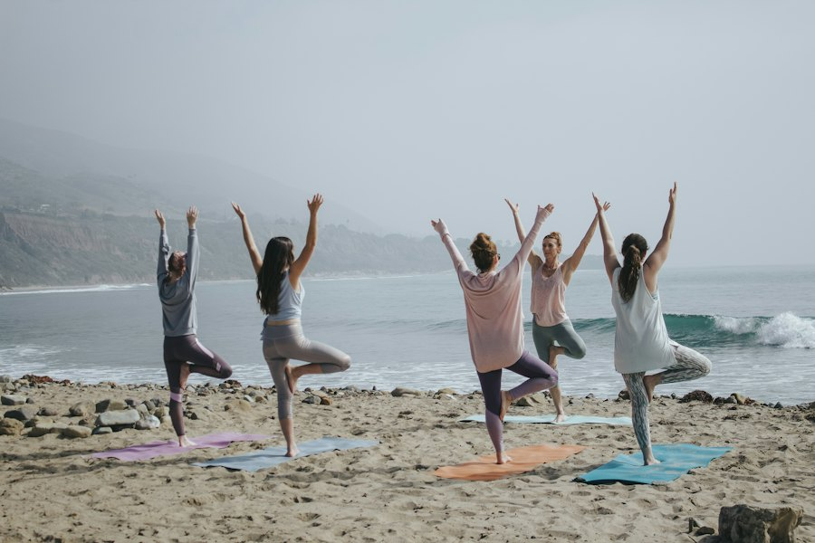
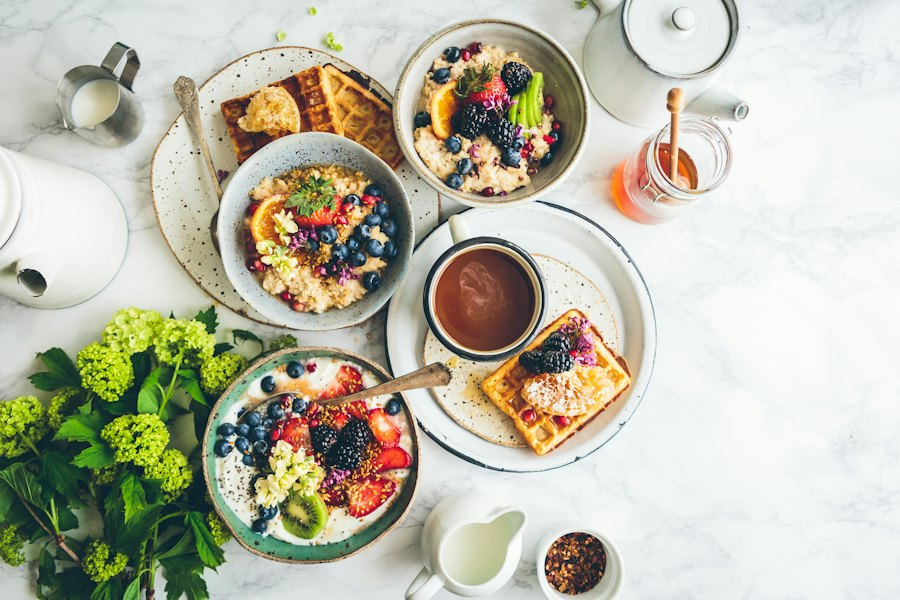
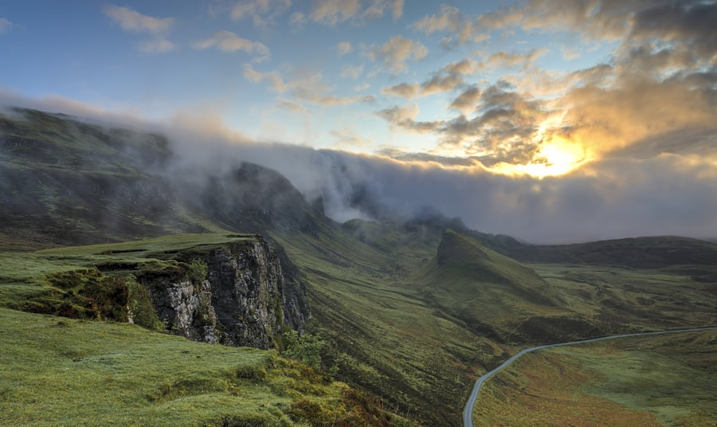
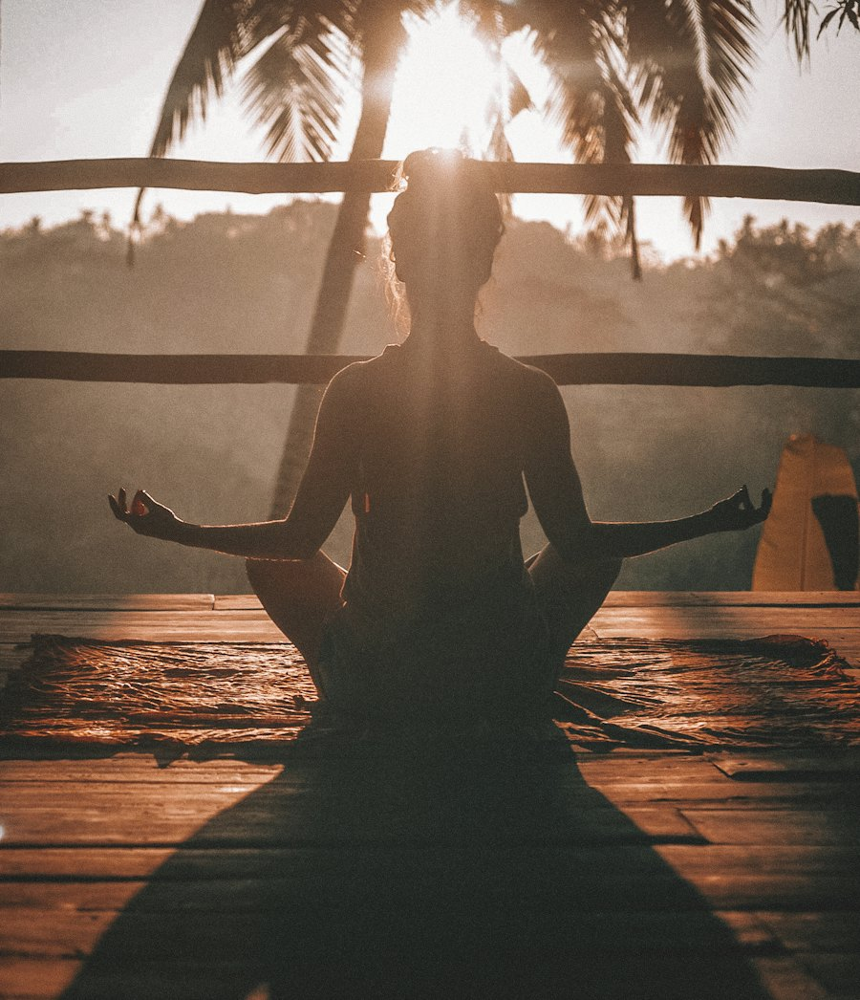
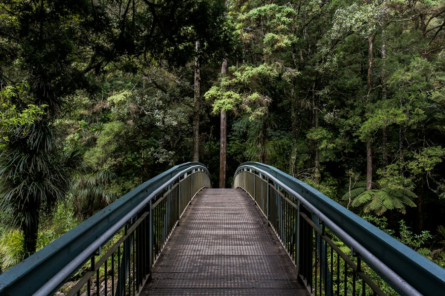
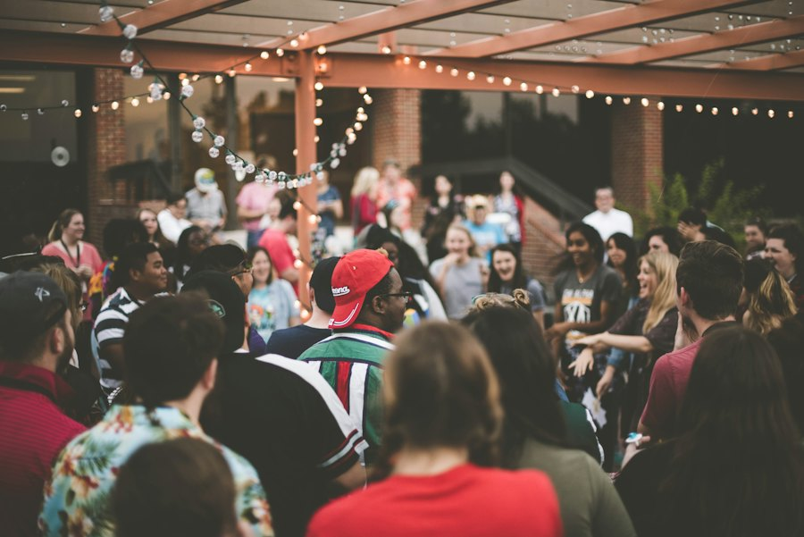
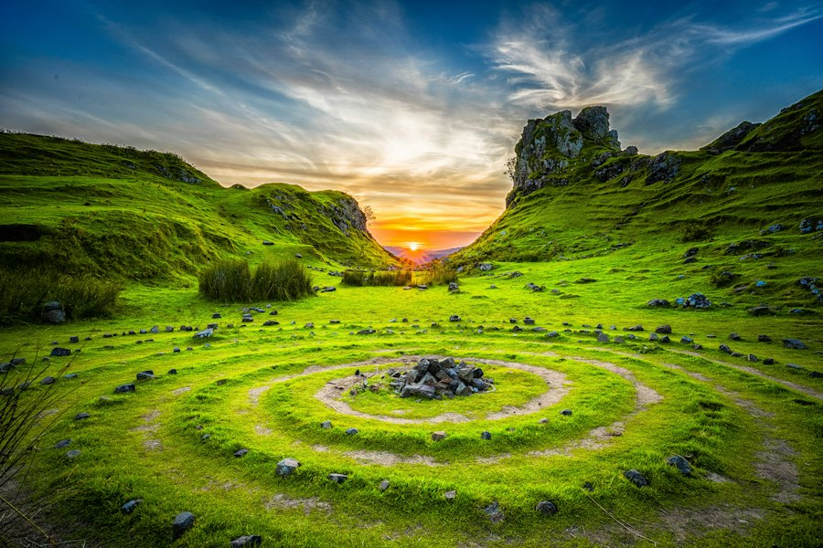

Farmfit
Fitness where the workout is the farm’s work: digging, carrying, turning compost, planting out. You leave tired, the beds are done, and nobody paid for a gym.
Campaign page coming
आकाश · Akasha
Whole, interconnectedness and openness for emergence
Touch the spiral, or scroll
Access & Membership
Space is not a hub with a programme of its own. It is what lets the rest stay open — the decisions about what anyone can walk into, and what membership opens further.
Every element below leads somewhere public. Membership is the second door in each of them: the full manual instead of the summary, the whole course instead of its first lesson, a seat held at the table before the list opens.
Open, and open further
West Direction
Sustainable Product Ecosystem
Earth-aligned food, organic clothing and circular home goods, bought from the growers, weavers and repairers who make them. Most of it is seasonal; when it runs out, it waits for next year.
Regenerate Landscape
The garden in Kathmandu, seen from above. One continuous bed winds inward from the outer path to a small round of grass at the centre.

A spiral bed is one long edge folded into a small footprint. The raised outer turns dry fastest and take the sun; the lower inner turns stay cool and hold water longer. Walk the path once and you pass through several small climates — enough to give each plant the corner it prefers.
Nothing here grows in a row of one. Greens, herbs, pulses, flowers and young fruit trees share the same bed, each at its own height and depth of root. Pests find less of what they want, pollinators find more, and the soil is worked by several root systems at once.
No bare ground. Cut stalks are dropped where they grew, the paths are mulched, and what leaves the garden is food. Each season the beds sit a little higher and darker — the regenerative part is that the land ends the year richer than it started.
East Direction
Ecological Courses
Modules on multispecies living, regenerative agriculture and indigenous practice, taught by the people doing the work. Some run online over weeks; some only make sense standing in a paddy.
Publications
Written and filmed in support of multispecies justice. Essays and newsletters are public; manuals, research papers and books download in full for members.
Field manual84 pages
How the Kathmandu garden was laid out, planted and kept alive through its first four monsoons, with drawings you can work from.
Members · full download
Essay9 min
On why “traditional variety” is the wrong phrase for something still being invented every season.
Public
Film series6 parts
Short films from one hectare of farmland, counting the species that share it — and asking who the farm is actually for.
Public
Report14 min
Three villages, one embankment, and the arithmetic of who gets to stay.
Public
Book212 pages
The longer argument behind this whole space — earth, water, space, fire and air as a way of organising what we owe one another.
Members · full download
LetterMonthly
What we are reading, who is teaching, what is opening. One a month, no campaigns.
South Direction
Community Gatherings & Hosting Workshops
Community dinners, seasonal brunches and ecological events at the garden and beyond — and the space itself, when you need somewhere to gather your own people.
Sat 24 Oct 2026Kathmandu garden
A long late-morning table at the end of the rice harvest. Whatever came out of the spiral beds that week, cooked by whoever turns up early.
Seasonal brunch
Oct 2026 · 3 daysKathmandu Valley
Three days of cooking, seed exchange and argument with growers from Jumla, Bihar and the Deccan.
Workshop
Every new moonKathmandu garden
A community dinner with the lights off and the fire lit. Bring one dish and one question you have been carrying.
Community dining
Jan 2027 · 2 daysDhaka
An open assembly on loss, damage and delta futures. Organisers, insurers, farmers and journalists in one room.
Ecological event

Venue
The garden, the covered kitchen and the long room are available for workshops, small celebrations and meetings that would rather not happen under strip lights.
Retreats & Festivals
Immersive ecology retreats and seasonal festivals in different landscapes across Nepal and its neighbours. Members are offered places before the list opens.

Nov 2026 · Brahmaputra · 6 days
A slow upstream walk with boatmen, hydrologists and two poets. Notebooks essential, opinions optional.

Dec 2026 · Pokhara · 8 days
Eight days of near-silence, breath practice and shared meals beside the lake.

Mar 2027 · Sikkim · 5 days
Five days with herbalists and forest-dwelling families, learning what a canopy asks of the people beneath it.

Apr 2027 · Kathmandu Valley · 2 nights
A spring festival for the new sowing — seed swaps by day, music under the lights by night.
North Direction
Policy and Action
Collaborations with local government and urban planners on landscapes held in common. Slow work, mostly meetings — and the only way a garden becomes a policy.
In conversation
Turning neglected ward courtyards into shared food gardens, with residents holding the keys and the municipality holding the water connection.
Pilot · 3 schools
A small spiral bed in each schoolyard, planted and kept by students, with a term of lessons that starts in the soil rather than the textbook.
Proposal
A shared map of the springs and stone spouts still running in the valley, so that planning decisions can see the water they would bury.
Projects and Activism
Our own campaigns: one about bodies and land, one about the five elements themselves.

Fitness where the workout is the farm’s work: digging, carrying, turning compost, planting out. You leave tired, the beds are done, and nobody paid for a gym.
Campaign page coming

Earth, water, space, fire and air as a public argument: talks, wall drawings and small actions asking what a city would look like if it answered to all five.
Campaign page coming
Come in
We send one letter a month — what we're reading, who's teaching, what's opening. No campaigns, no funnels.
Or write to us: hello@pranali.space